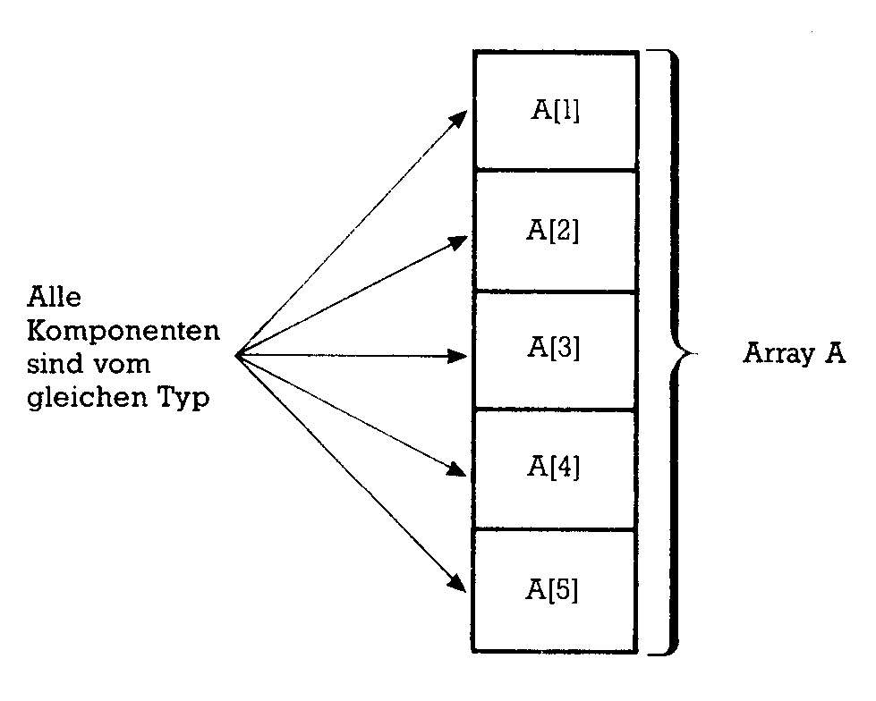
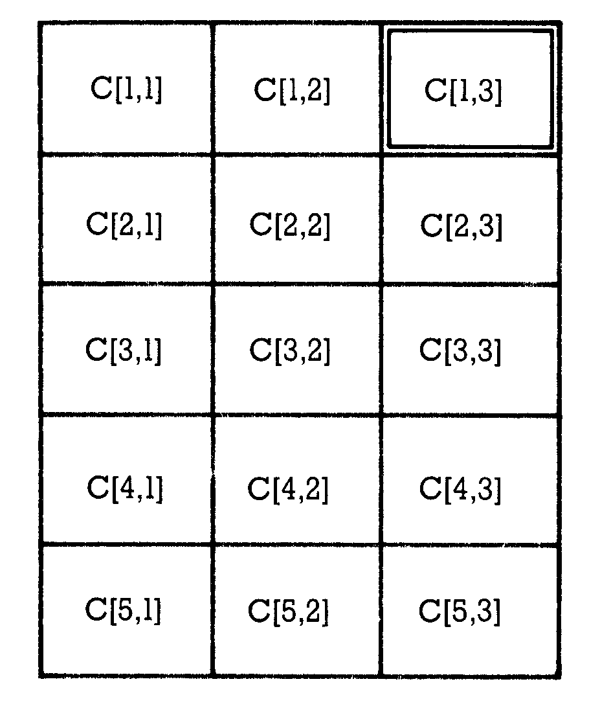

Pascal-Kurs (Teil 4)
Arrays (die jedem aus Basic bekannt sind) und Records — strukturierte Typen — geben dem Pascal-Programmierer ein wichtiges Werkzeug in die Hand für den Aufbau von Datenstrukturen.
Bisher haben wir die Pascal-Anweisungen (einfache Anweisungen und Verbundanweisungen), die IF-, FOR- WHILE- und REPEAT-Schleife kennengelernt (Teil 2, 64'er 4/86). Danach ging es um Datentypen. Sie haben gesehen, daß Basic mit den Funktionen, die Pascal bietet, nicht mehr Schritt halten kann.
Und wir haben bereits eigene Datentypen definiert und eingesetzt (Teil 3 des Kurses, 64'er 5/86).
In diesem Teil des Kurses werden Sie die strukturierten Datentypen kennenlernen. Die Felder (engl. Arrays) hat man in vielen Programmiersprachen zur Verfügung. Aber das Record-Konzept ist einem Basic-Programmierer nicht unbedingt bekannt.
Ein Array setzt sich aus mehreren Komponenten eines einfachen Datentyps zusammen. Die Anzahl der Komponenten wird vom Programmierer festgelegt. Alle Komponenten müssen vom gleichen Datentyp sein. Arrays sollten als Typ deklariert werden:
TYPE Typname = ARRAY [ t1 ] OF t2;
Index-Typ kontra Komponenten-Typ
Bei dieser Vereinbarung müssen wir streng zwischen dem Typ des Indizes (»tl«) und dem Typ der Array-Komponenten (»t2«) unterscheiden. »tl« definert den Index. Dieser gibt an, wieviel Komponenten der Array enthält. Der Index muß ein Ausschnitts- oder ein Aufzählungstyp sein. »t2« gibt den Datentyp der Komponenten an. Alle Komponenten sind vom gleichen Typ. Mit Ausnahme des Datentyps File ist hier jeder einfache oder strukturierte Typ erlaubt.
Variablen vom Typ Array werden Array-Variablen genannt, und ihre Komponenten sind Komponentenvariablen. Beim Aufruf von Komponenten wird der Index in eckigen Klammern angegeben.
Beispiel:
TYPE feld = ARRAY [1..5] OF REAL ;
VAR a : feld;
Der Typ »feld« ist als ein Array mit fünf Komponenten festgelegt. Der Index ist ein Ausschnittstyp vom Basistyp Integer. Die Array-Grenzen und die Anzahl der Elemente sind damit festgelegt. Die Komponenten selbst sind vom Typ Real. Die Array-Variable besitzt den Namen a. Eine Komponente wird beispielsweise mit a[l] aufgerufen. Bild 1 zeigt, wie man sich diese Struktur vorstellen kann. Weitere Beispiele:
TYPE X=ARRAY [1..10] OF INTEGER;
VAR U:X;
gleichwertig dazu ist:
VAR U:ARRAY [1..10] OF INTEGER;
oder
TYPE INDEX = 1..10;
VAR U: ARRAY [INDEX] OF INTEGER;

Alle drei Formen der Vereinbarung sind gleichwertig. Es hängt von der Art der Problemstellung und vom Programmierstil ab, welche Form benutzt wird. Die einzelnen Komponenten dieses Arrays werden in der folgenden Form aufgerufen:
U[1], U[2], U[3], … ,U[10]
Eine Zuweisung erfolgt genau wie bei anderen Variablen auch: U[1]:= 10;
U[5]:= x + U[1];
U[1]:= U[1] + 1;
Indizes sind vom Aufzählungs- oder Ausschnittstyp
Aufzählungstypen lassen sich sowohl als Indizes als auch als Komponenten verwenden:
TYPE TAG = (MO,DI,MI,DO,FR,SA,SO);
UMSATZ = ARRAY [TAG] OF REAL;
WOCHE = ARRAY [-2..4] OF TAG;
VAR W: WOCHE;
X: UMSATZ;
Die Variable W ist ein Array mit sieben Komponenten, die alle vom Typ Real sind. Aufruf:
W[MO], W[DI], W[MI], W[D0], ….
Die Variable X ist ein Array mit sieben Komponenten, die alle vom Typ TAG sind. Eine Komponente dieses Arrays kann die Werte MO, DI, MI … annehmen. Aufruf:
X[-2], X[-1], X[0], ….
Die Komponente einer Array-Variablen kann wiederum ein Array sein:
TYPE B = ARRAY [1..5] 0F ARRAY [1..3] 0F CHAR ;
Eine gängigere Schreibweise für das obige Beispiel wäre:
TYPE B = ARRAY [1..5,1..3] 0F CHAR;
VAR C : B;
In den eckigen Klammern dürfen mehrere Indizes stehen. Solche Arrays nennt man mehrdimensional. Es ist üblich, eindimensionale Arrays als Vektoren, zweidimensionale als Matrizen (Einzahl Matrix) zu bezeichnen. Bild 2 veranschaulicht den Aufbau der Matrix C.

Ein Element dieser Matrix wird beispielsweise mit C[l,3] aufgerufen. Man kann sich den ersten Index als Nummer der Zeile, den zweiten als Nummer der Spalte vorstellen.
Ein Array kann in Pascal beliebig viele Indizes besitzen. Folgendes Beispiel ist eine syntaktisch korrekte Definition:
TYPE DIM = ARRAY [1..100,1..10,1..3,1..5] 0F REAL;
VAR Z:DIM;
Ein möglicher Aufruf wäre zum Beispiel Z[100,10,3,5]. Z ist ein Array mit 100 * 10 * 3 * 5 = 15000 Elementen. Dies würde die Speicherkapazität eines C 64 bereits überschreiten (bei 6 Byte pro Real-Zahl).
In vielen Fällen ist es vorteilhaft, zur Definition Konstanten und Ausschnitte zu benutzen. Beispiel:
CONST M=5;N=6;
VAR A:ARRAY [l..M,l..N] 0F REAL;
Die Verwendung von Konstanten und Typenvereinbarungen garantieren eine gute Dokumentation des Programms.
Mit Array-Komponenten arbeiten
Bei der späteren Verwendung von Array-Komponenten sollte der Programmierer sorgfältig drei Typen unterscheiden:
- den Typ des Arrays
- den Typ der Komponenten
- den Typ der Indizes.
Beim Aufruf können die Indizes auch als Ausdrücke formuliert werden:
Y[C*5] oder Z[3+X,l,2,3]
Entscheidend dabei ist, daß das Ergebnis eines Ausdrucks innerhalb der Grenzen der Definition liegen muß. Liegt das Ergebnis außerhalb, erhält man einen Laufzeitfehler.
Arithmetische Operationen sind nur an den Komponenten des Arrays möglich. Eine Ausnahme bilden Wertzuweisungen. Es ist möglich, der Variablen X alle Elemente der Variablen Y auf einmal zuzuweisen, wenn X und Y vom gleichen Typ sind. Beispiel:
TYPE T = ARRAY [1..5] OF REAL;VAR X,Y:T;
Nach dieser Vereinbarung ist die Wertzuweisung X:=Y erlaubt. Arrays vom gleichen Typ können auch auf Gleichheit überprüft werden:
IF A=B THEN ….
IF A()B THEN …
Arrays sind gleich, wenn alle Komponenten gleich sind. Sie sind ungleich, wenn sie sich auch nur in einer Komponente unterscheiden. Andere Vergleiche als die obengenannten müssen komponentenweise durchgeführt werden:
CONST M=5; N=10;
TYPE MATRIX=ARRAY[1..M,1..N] OF INTEGER;
VAR Al,A2: MATRIX;
VERGLEICH : BOOLEAN;
I,J: INTEGER;
VERGLEICH:=TRUE;
FOR I:=1 TO M DO
FOR J:=1 TO N DO
IFNOT (Al[I,J]<A2[I,J]) THEN VERGLEICH :=FALSE;
Auch die Addition von zwei Arrays muß komponentenweise erfolgen. In einer Schleife werden die Komponenten mit dem gleichen Index addiert. Beispiel:
VAR A,B,C:T (*Definition siehe oben*)
I:INTEGER;
FOR I:=1 TO 5 DO C[I]:=A[I]+B[I]
Die Eingabe erfolgt ebenfalls über eine FOR-Schleife:
FOR I:= 1 TO 5 DO READ(A[I])
Mit dem Typ der Indizes ist festgelegt, wie viele Komponenten ein Array maximal enthalten kann. Dabei ist es nicht möglich, die Komponentenzahl variabel zu gestalten oder nachträglich zu ändern. Was aber ist zu tun, wenn die Anzahl der Komponenten vorher nicht bekannt ist?
Eine Möglichkeit besteht darin, den Array möglichst groß zu definieren. Es führt nicht zu Fehlern, wenn ein Teil des Speicherplatzes ungenutzt bleibt, jedoch wird Speicherplatz verschwendet. Eine andere Lösung besteht darin, den Datentyp Pointer zu verwenden. Einen Array wird man immer dann benutzen, wenn eine bekannte Anzahl gleichartiger Daten abgespeichert werden muß.
Das Packen von Arrays
Bei manchen Pascal-Versionen ist das reservierte Wort PACKED vorgesehen. Damit teilt man dem Compiler mit, daß eine optimale Ausnutzung des Speichers gewünscht wird. In Profi-Pascal hat PACKED keine Wirkung, da hier immer die günstigere Speichermethode verwendet wird. Aus Gründen der Kompatibilität zu Standard-Pascal ist PACKED erlaubt, aber wirkungslos.
Anders bei Oxford-Pascal. Unter bestimmten Umständen kann durch die Verwendung von PACKED der Speicherbedarf halbiert werden. Dies trifft insbesondere bei der Verwendung der Typen Char, Boolean, sowie bei Aufzählungs- und Ausschnittstypen mit einem Wertebereich unter 256 Elementen zu. Diese können dann in einem Byte statt in zwei Bytes dargestellt werden. Der zusätzlich nötige Rechenaufwand ist nur geringfügig höher. Beispiel für die Definition eines gepackten Arrays:
TYPE T1 = 0..255;
P = PACKED ARRAY [1..10] OF T1;
VAR S : P,
Beim Zugriff auf Array-Variablen braucht im Anweisungsteil kein Unterschied zwischen gepackt und nicht gepackt gemacht werden.
Eine Sonderrolle spielt der PACKED ARRAY OF CHAR in Oxford-Pascal. Er wird ähnlich wie ein String-Typ verwendet. Da Profi-Pascal einen eigenen String-Typ anbietet, werden beide in einem der folgenden Teile genauer besprochen.
Der Array-Typ soll an zwei Programm-Beispielen demonstriert werden. Listing 1 zeigt einen einfachen Algorithmus zum Sortieren eines Arrays. Das Verfahren ist als Bubble-Sort bekannt und nicht besonders schnell. Jede Zahl wird mit der folgenden verglichen. Ist die folgende Zahl kleiner, werden die beiden Zahlen ausgetauscht. Dieses Verfahren wird so lange wiederholt, bis der Array sortiert ist.
program bubble;
const n=10;
type vektor = array [1..n] of integer;
var x : vektor;
i,c:integer;
b:boolean;
begin
(* 10 integer-werte werden in den array eingelesen *)
writeln('bitte 10 integer-werte eingeben');
for i:= 1 to 10 do begin
writeln(i,'-ter wert');
read(x[i])
end;
(*sortieren*)
b:= true;
while b do begin
b:=false;
for i:=1 to n-1 do begin
if x[i]>x[i+1] then begin
(*austausch*)
c:=x[i];
x[i]:=x[i+1];
x[i+1]:=c;
b:=true;
(* b=true bedeutet, dass der austausch stattgefunden
hat. b wird erst dann false, wenn die folge sortiert ist *)
end;
end; (* for-schleife*)
end; (* while-schleife*)
(* ausgabe *)
for i:= 1 to n do write (x[i]:6);
writeln;
writeln('minimum: ',x[1]);
writeln('maximum: ',x[n]);
end.
Das Listing 2 zeigt, wie man eine positive, ganze Zahl in eine hexadezimale Zahl umwandeln kann. Die Komponenten des Arrays A können wegen der Modula-Division "A[I]: = X MOD 16" nur Werte zwischen 0 und 15 annehmen. Deshalb ist es (theoretisch) sinnvoll, die Variable A zu packen, um Speicherplatz zu sparen.
program zahlenumwandlung;
(* eine ganze positve zahl wird in eine
sedezimale zahl umgewandelt *)
var x,y,i,j: integer;
a:packed array[1..20] of 0..15;
begin
writeln('bitte postive ganze zahl eingeben');
READ(X);
while x>0 do begin
i:=1;
repeat
y:=x div 16;
a[i]:=x mod 16;
i:=i+1;
x:=y;
until y=0;
for j:=i-1 downto 1 do
begin
if a[j]>10 then
case a[j] of
10:write('a');
11:write('b');
12:write('c');
13:write('d');
14:write('e');
15:write('f')
end
else write(a[j]:1)
end;
writeln;
writeln('bitte positve ganze zahl eingeben');
read(x);
end;
end.
Der Datentyp Record
Auch der Datentyp Record besteht aus einer festen Anzahl von Komponenten. Die Komponenten können aus verschiedenen Typen bestehen und haben einen eigenen Namen.
Die allgemeine Form des Records lautet:
TYPE Typname = RECORD
Komponentennamel : Datentyp;
Komponentenname2 : Datentyp;
Komponentenname-n: Datentyp;
END;
Der Typname bezeichnet die gesamte Struktur. Zwischen den reservierten Wörtern RECORD und END werden alle Komponenten aufgeführt. Die Komponenten selbst dürfen von einem beliebigen Datentyp sein, also auch vom Typ Record. Die Namen der Komponenten innerhalb eines Records müssen verschieden sein.
Worin bestehen nun die Unterschiede zum Array? Beim Array haben alle Komponenten den gleichen Typ, beim Record können sie einen unterschiedlichen Typ besitzen. Beim Array werden die Komponenten mit einem Index angesprochen. Beim Record haben sie einen eigenen Namen. Zunächst einige Beispiele:
In einer Variablen soll das Datum in der Form 23 Feb 1986 abgelegt werden. Die Struktur besteht aus einem Record mit drei verschiedenen Komponenten:
TYPE DATUM = RECORD
TAG: 1..31;
MONAT: (JAN,FEB,MAERZ,APRIL,MAI,
JUNI,JULI,AUG,SEPT, OKT,NOV,DEZ);
JAHR: 1900..2000;
VAR D:DATUM;
Die Variable D hat den Typ DATUM. Auf ihre Komponenten kann zugegriffen werden, wenn der volle Name in der folgenden Form angegeben wird:
D.TAG:=23;
D.MONAT:=FEB;
D.JAHR:=1986;
Die Wertzuweisung auf Record-Komponenten kann auf zwei verschiedene Arten erfolgen.
Der Record-Komponenten werden Werte zugewiesen:
D.JAHR:=1984
Allen Komponenten eines Records werden einer anderen Variablen desselben Typs zugewiesen:
VAR D,E :DATUM;
D:=E;
Eine typische Anwendung von Records besteht darin, eine Adresse abzuspeichern:
TYPE ADRESSE = RECORD
NAME: PACKED ARRAY [1..25J OF CHAR;
ORT: PACKED ARRAY [1..25] OF CHAR;
PLZ: 1000..8999;
STRASSE: PACKED ARRAY [1..25] OF CHAR;
END;
VAR A,B:ADRESSE;
Vor dem END darf ein Semikolon stehen. Die Variablen A und B haben denselben Typ. Folgende Aufrufe sind möglich:
A.NAME: = 'MÜLLER';
A.ORT: = 'MÜNCHEN';
B.ORT: = 'AUGSBURG';
IF A.NAME = B.NAME THEN WRITELN('GLEICH');
A:=B;
Sollen mehrere Adressen verarbeitet werden, ist es sinnvoll, einen ARRAY OF RECORD zu definieren. Alle Komponenten eines solchen Arrays haben dann den Typ Record. Für 100 Adressen würde man folgenden Array definieren:
VAR SATZ: ARRAY [1..100] 0F ADRESSE;
Das Einlesen der Sätze könnte dann in folgender Schleife erfolgen:
I:=1;
REPEAT
READLN (SATZ [ I ]. NAME);
READLN(SATZ[I].ORT);
READLN(SATZ[I].PLZ);
READLN (SATZ [ I ] . STRASSE);
I:=I+1;
UNTIL (SATZ[I].NAME = '*') OR (l>100);
I:=I-1;
Einfacher geht es mit der WITH-Anweisung
Im obigen Beispiel mußte bei jeder Record-Komponente der Name des Records mit angegeben werden. Dies ist mühsam und läßt sich mit der WITH-Anweisung umgehen. Innerhalb der WITH-Anweisung kann dann auf den Record-Namen verzichtet werden:
WITH SATZ[I] D0 BEGIN
READLN(NAME);
READLN(ORT);
READLN(PLZ);
READLN(STRASSE)
END;
In einem Record dürfen auch Namen verwendet werden, die außerhalb schon einmal benutzt wurden. Beispiel:
VAR A:INTEGER;
B: RECORD
A:REAL;
B:INTEGER
END;
Die Record-Variable B ist unterscheidbar von der Record-Komponente B.B. Das gleiche gilt für A und B.A. Innerhalb der Anweisung
WITH B D0
BEGIN
A:=10.5;
B:=TRUNC(A)
END;
kann auf die Integer-Variable A nicht zugegriffen werden, denn A bedeutet hier B.A .
Nun folgt ein ausführliches Programmbeispiel (Listing 3), das nochmals die Anwendung des Record-Typs zeigt. Eine Personalstatistik soll erstellt werden. Zunächst werden alle beschäftigten Personen erfaßt. Dann sucht das Programm die Namen der Personen, die älter als 40 Jahre sind und mehr als 20 Dienstjahre geleistet haben. Weiter interessiert, wieviel Frauen zu dieser Gruppe gehören.
program personalstatistik;
const jahr = 1986;
type person=record
name : record
vorname:packed array[1..20] of char;
zuname: packed array[1..20] of char;
end;
adr:record
plz:1000..8999;
ort: packed array[1..30] of char;
str: packed array[1..30] of char;
end;
geburtsjahr:1900..jahr;
einstelljahr:1920..jahr;
geschlecht:(mann,frau);
end;
var satz:array[1..100]of person;
i,j,x,y:integer;
c:packed array[1..20] of char;
begin
(* einlesen der personalsaetze*)
i:=1;
repeat
writeln('vorname');
writeln('eingabeende mit ''*''');
readln(c);
if c[1]<>'*' then begin
with satz[i] do begin
with name do begin
vorname:=c;
writeln('zuname ?');
readln(zuname);
end;
with adr do begin
writeln('plz? ort?');
readln(plz,ort);
writeln('strasse');
readln(str);
end;
writeln('geburtsjahr ? einstelljahr');
readln(geburtsjahr, einstelljahr);
writeln('geschlecht ? 0:mann 1:frau');
readln(j);
case j of
0:geschlecht:=mann;
1:geschlecht:=frau;
end;
end;
i:=i+1;
end;
until (c[1]='*') or (i>100);
(* ausgabe der personen, die aelter als 40 jahre sind
und mehr als 20 dienstjahre geleistet haben*)
x:=0;
y:=0;
writeln('gesamtzahl der beschaeftigten: ',i-1);
writeln('liste der personen, die aelter als 40 jahre sind');
writeln('und mehr als 20 dienstjahre geleistet haben');
for j:= 1 to i-1 do
with satz[j],name do
if (jahr-geburtsjahr>40) and (jahr-einstellungsjahr>20) then begin
writeln(zuname,' ',vorname);
x:=x+1;
if geschlecht=frau then y:=y+1;
end;
writeln(x,' personen, davon ',y,' frauen')
end.
Manchmal unterscheiden sich Records nur in einer einzigen Komponente und sind sonst gleichartig aufgebaut. Man hat deshalb in Pascal die Möglichkeit geschaffen, solche Records in einer Struktur zusammenzufassen.
Eine Record-Struktur enthält beispielsweise den Namen einer Person und, falls verheiratet, das Heiratsdatum. Ist eine Person nicht verheiratet, so interessiert uns lediglich, ob sie geschieden ist. Dabei gibt es wiederum zwei Möglichkeiten der Deklaration:
TYPE PERSON = RECORD
NAME: PACKED ARRAY [1..25] OF CHAR;
CASE VERH:BOOLEAN 0F
TRUE:(HDATUM:DATUM);
FALSE: (STAT:BOOLEAN)
END;
Die Variable »VERH« hinter dem Schlüsselwort CASE wird als Selektor bezeichnet. Ein Record vom Typ PERSON enthält einen Namen und entweder das Heiratsdatum oder eine Statusvariable vom Typ Boolean. Diese Form bezeichnet man auch als freie Variante im Gegensatz zur gebundenen Variante:
TYPE PERSON = RECORD
NAME: PACKED ARRAY [1..25] OF CHAR;
VERH:BOOLEAN
CASE BOOLEAN 0F
TRUE:(HDATUM:DATUM);
FALSE: (STAT:BOOLEAN)
END;
VAR T:PERSON;
In beiden Fällen erfolgt die Zuweisung beliebig; der Inhalt des Selektors wird nicht überprüft!
T.STAT:=TRUE;
T.HDAT.TAG:=30;
Der Programmierer muß selbst dafür sorgen, daß auf die gewünschte Variante zugegriffen wird. Aus diesem Grund empfiehlt sich ein sorgsamer Umgang mit dem varianten Record. Speicherplatz wird vom Compiler für die längste Komponente des varianten Teils reserviert.
(Anton Gruber/Silvia Gutschmidt/cg)